Детейлинг-студия в Москве
Оклейка кузова бронеплёнкой
— Защитим лак от сколов, песка и зимних реагентов —
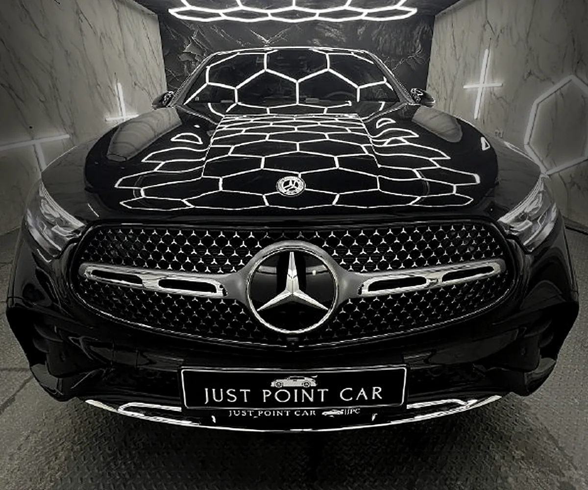
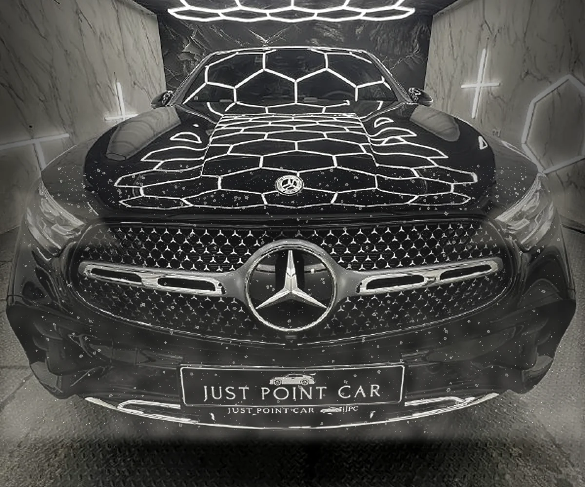
Награда Яндекс Карт
Награда Яндекс Карт за оценки клиентов
Её получают организации, которым пользователи Яндекса ставят самые высокие оценки. У студии 5,0 из 5,0, 56 оценок и 52 отзыва — ни одного ниже пяти звёзд за всё время.
Оценки по темам — так их считает сам Яндекс на основе текстов отзывов. Открыть карточку на Яндекс Картах
Главная услуга
Оклейка защитной плёнкой
Полиуретан принимает на себя сколы, песок и реагенты — заводской лак остаётся нетронутым. Клеим с детализацией: подворотами по кромкам и снятием деталей там, где это нужно.
- Полная оклейка кузоваВесь кузов в прозрачный полиуретан 210 мкм
- Зоны рискаКапот, бампер, крылья, зеркала, стойки — то, во что летит с дороги
- Оклейка фарПлёнка 190 мкм: защита оптики от пескоструя и камней
- Антихром и крыша в чёрный полиуретанМеняем облик машины без покраски и обратимо
- Рояльный лак и мониторы в салонеГлянцевые панели перестают ловить царапины от колец и ключей
Делали оклейку зон риска, работа произведена качественно и быстро) день в день уже забрала свою малышку
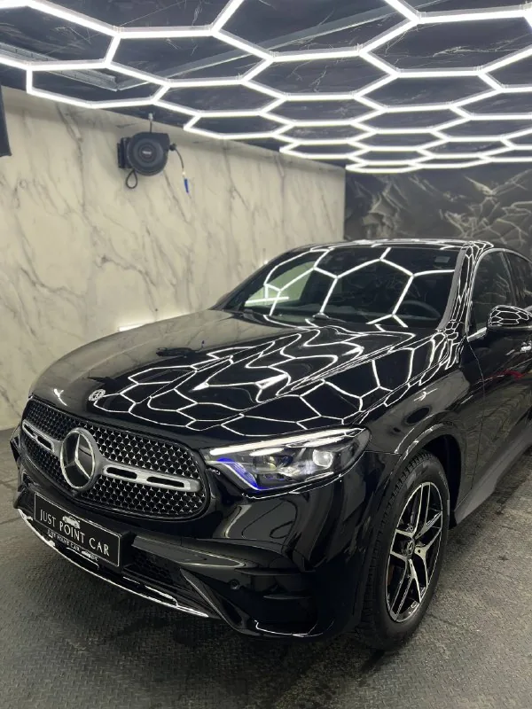
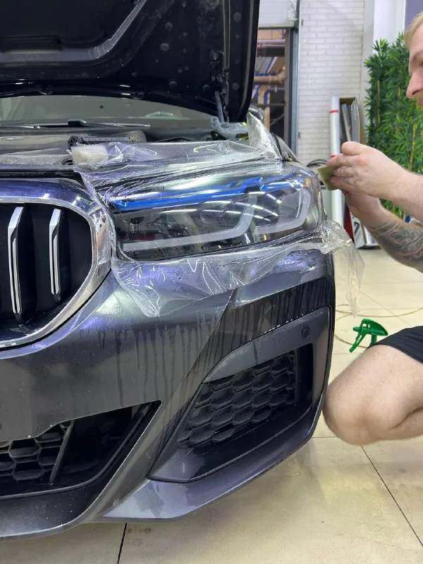
Материалы
Полиуретан 210 мкм на кузов, 190 — на фары
На кузов идёт полиуретановая бронеплёнка Spectroll premium 210 микрон, на фары — 190 микрон. Это не виниловая плёнка: полиуретан тянется, затягивает мелкие царапины от тепла и не желтеет под солнцем.
- Защитный лайнерснимается
- Полиуретан Spectroll premium — кузов210 мкм
- Полиуретан — фары190 мкм
- Клеевой слойснимается без следа
- Заводской лак вашего автоостаётся нетронутым
Толщина и марка взяты из постов студии в канале @JPCDetailing — там же выкладывают процесс по каждой машине.
Оклеивал у ребят зоны риска, все сделано в лучшем виде. В подарок отполировали заднюю оптику. Рекомендую
Цена
Считаем по фото и называем цену до старта
Универсального ценника на оклейку нет: всё зависит от модели, объёма и состояния лака. Поэтому смотрим фото, говорим, что реально нужно вашей машине, и фиксируем сумму до начала работ.
01
Цена известна заранее
Сколько посчитали по фото и осмотру — столько и в итоге. По ходу работ ничего не дописываем.
02
Не продаём лишнего
Если зон риска достаточно и полный кузов вам не нужен — так и скажем. Если лак под плёнку надо готовить — тоже скажем заранее.
03
Работаем и с бюджетом
В боксе рядом стоят Porsche Cayenne и ВАЗ 2113. Подход и материалы одинаковые, разный только объём работ.
Работа выполнена максимально быстро и качественно. Специалисты общаются вежливо, культурно. Отношение к клиенту отличное. Ценовая политика соответствует качеству.
Прайс в карточке Яндекс Карт помечен как «давно не обновлялось», поэтому на сайте цифры не публикуются — актуальную сумму называет мастер после фото.
Персональный расчёт
Посчитаем точную цену под ваше авто
Оставьте марку и что нужно сделать. Мастер посмотрит фото, скажет, что выгоднее — весь кузов или только зоны риска, и назовёт стоимость со сроком.
- Машину спереди, сбоку и сзадиПри дневном свете, целиком в кадре
- Крупно — сколы и царапиныЕсли они есть: перед оклейкой лак лучше привести в порядок
- Салон — если нужна химчисткаСиденья, ковролин, потолок, руль
Как проходит работа
От заявки до выдачи
Пять шагов, и на каждом вы понимаете, что происходит с машиной и сколько это стоит.
Фото и предварительная оценка
Присылаете снимки в мессенджер. Мастер смотрит состояние лака и говорит, что имеет смысл делать, а что — лишнее.
Осмотр и согласование
Приезжаете на осмотр, подбираете удобный день сдачи. Фиксируем перечень работ, итоговую сумму и срок.
Работа и обратная связь
Пока машина в боксе, держим вас в курсе, а процесс по многим авто выкладываем в канал @JPCDetailing.
Приёмка
Принимаете работу в боксе под светодиодным светом — на нём видно и плёнку, и качество полировки.
Уход после
Рассказываем, как мыть и чем обслуживать покрытие, чтобы керамика и плёнка отработали свой срок.
Договорился на удобный для меня день сдачи авто, Даниил выполнил все работы качественно и в срок. Все оговоренные моменты и нюансы были учтены… Смело можно обращаться и не переживать за результат
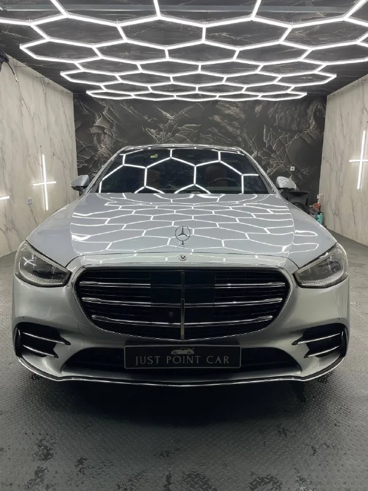
Команда
Даниил и команда Just Point Car
В отзывах на Яндекс Картах клиенты называют мастера по имени — это и есть главная проверка: за результат отвечает конкретный человек, а не «компания». Запись и консультация идут напрямую у мастера.
- Персонал — 100% положительных оценок34 отзыва по этой теме на Яндекс Картах
- Объясняют, что и зачем«Все объяснили, рассказали» — из отзыва Максима Мамичева
- К ним приезжают коллеги по цеху«Сам детейлер, люблю качественное обслуживание по технологии» — Yaroslav M.
Обратился к ребятам JPC за услугой детейлинга автомобиля у мастера Дани, и остался в полном восторге!.. Даня дал несколько полезных советов по уходу за машиной, что также очень ценно
Работы
Что проходит через бокс
От Mercedes S-класса и Porsche до ВАЗ 2113 и Nissan Note. Каждой машине — свой объём работ; отчёты по ним студия выкладывает в канал.
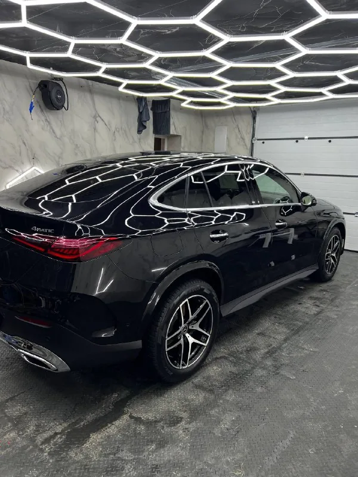
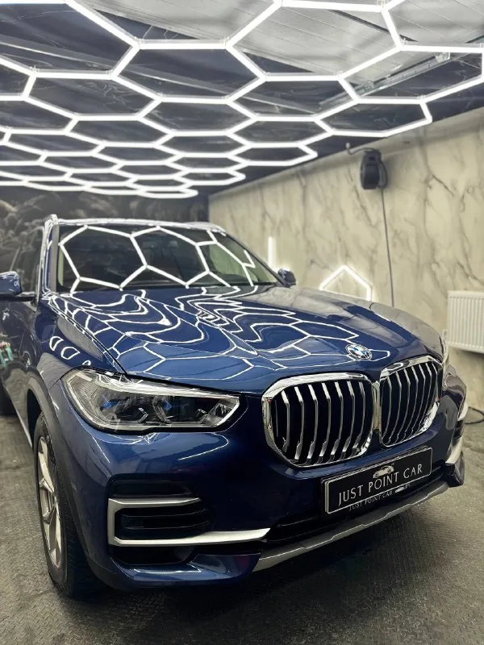
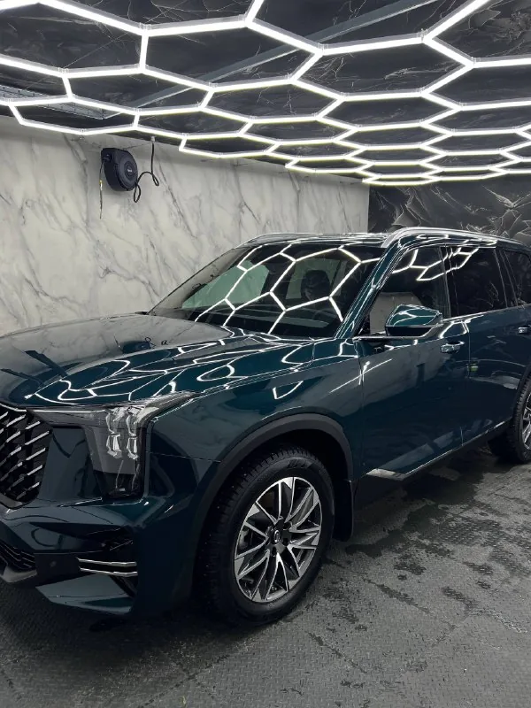
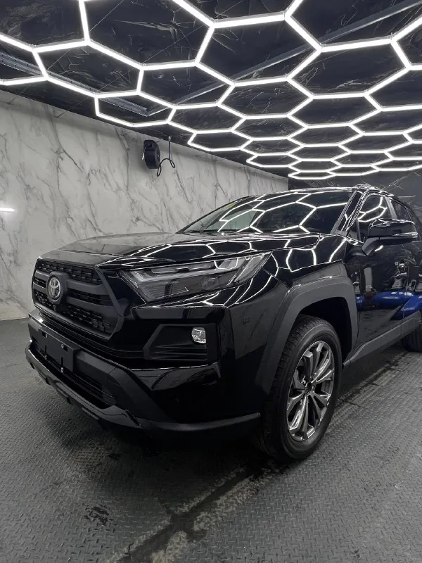
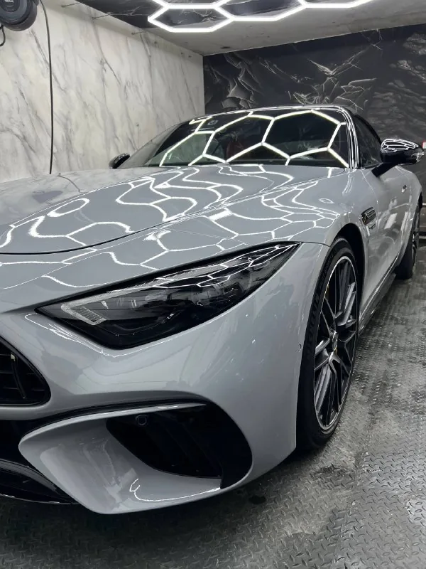
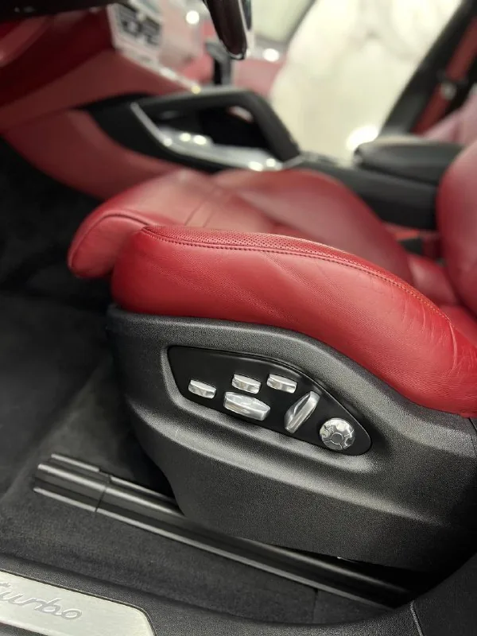
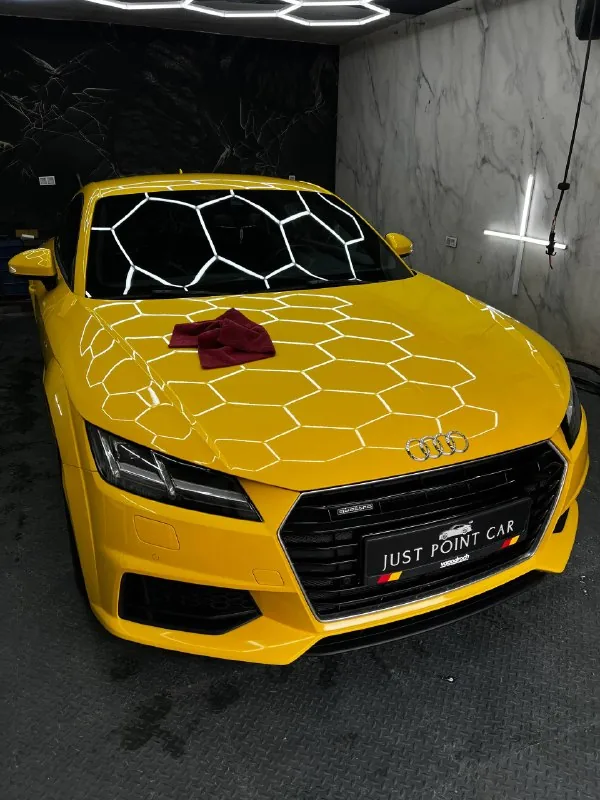
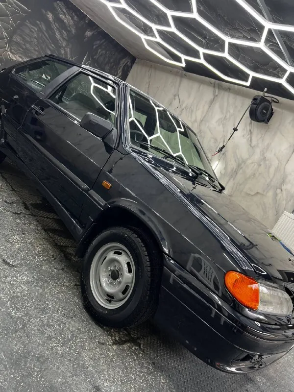
Отзывы
Что говорят клиенты
Отзывы приведены слово в слово с Яндекс Карт. Мы не выбираем, что показать: на Картах лежат все 52, включая те, что сюда не поместились.
Честно говоря, до этого думал, что детейлинг — «разводилово» за мои деньги. Но результат превзошел ВСЕ мои ожидания!.. Спасибо, что изменили мою точку зрения насчёт детейлинга!
Отличный детейлинг, делал полировку/керамику и хим.чистку… Все в срок, как и договаривались. UPD: Прошло пол года, керамика на месте, авто сияет
Однозначно рекомендую! Качественно, оперативно, с регулярной обратной связью!.. Адекватная цена за качественную химчистку, мойку подкапотного пространства и детейлинг мойку
Полировал Santa Fe — результат огонь. Кузов блестит, как будто только с конвейера. Никаких голограмм, всё чётко и по технологии
Сделал химчистку салона + мойку автомобиля. Такой чистой я никогда не видел свой автомобиль)) Теперь это мой фаворит среди химчисток тачки… Теперь это наше семейное место))
Искал много детейлингов кто сможет затонировать такое огромное стекло, все отказывались, позвонил этим ребятам сказали сделают, и реально сделали!!
Отдельная история
Готовим машины к выставкам и после гонок
Перед фестивалем клуба Audi TT 1 августа на «Трёх вокзалах Депо» через бокс прошли сразу несколько клубных машин — включая приехавшие из Казани. После этапа RDRC в студию заезжал гоночный автомобиль команды Level Performance.
Выставочная подготовка — это отдельный уровень внимания: мойка подкапотного пространства, оклейка фар в полиуретан, восстановительная полировка кузова и керамика, чтобы машина держала блеск весь день на площадке.
- Подкапотное пространствоВымытый мотор — первое, что открывают на выставке
- Восстановительная полировкаУбираем голограммы и матовость, возвращаем глубину цвета
- Керамика перед площадкойБлеск держится весь день, пыль не липнет
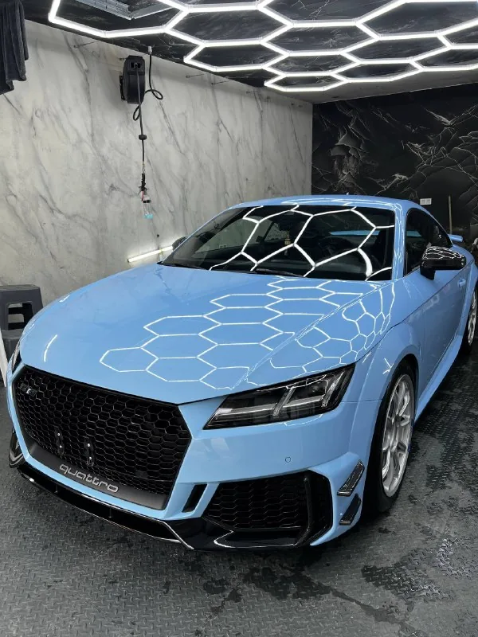
Что ещё делаем
Студия закрывает машину целиком
Оклейка — главная услуга, но чаще всего машину привозят на комплекс: снаружи и внутри за один визит.
Полировка кузова
Восстановительная полировка: убираем царапины, голограммы и матовость. Глубокие риски маскируем так, что с пары шагов их не видно — это часто дешевле покраски детали.
Керамическое покрытие
Наносим в два слоя. Глубокий блеск и гидрофоб: вода скатывается, грязь держится хуже, мыть приходится реже.
Химчистка салона
С разбором, если нужно: ткань, кожа, пластик, потолок. На кожу после чистки наносим крем — чистая кожа матовая, без засаленного глянца.
Тонировка стёкол
Атермальная плёнка на переднюю полусферу, LLumar на заднюю. Берёмся и за нестандартные большие стёкла.
Скраб остекления и антидождь
Снимаем водный камень со стёкол и наносим антидождь — в ливень лобовое остаётся чистым.
Полировка фар
Возвращаем оптике прозрачность, при желании сразу закрываем плёнкой, чтобы помутнение не вернулось.
Детейлинг-мойка и подкапотка
Комплексная мойка с чисткой дисков от тормозной пыли и металловкраплений, снятие битума, мойка моторного отсека.
Подарочный сертификат
На химчистку, полировку и керамику — по ним к нам уже приезжали. Номинал и состав подбираем под бюджет.
Вопросы
Частые вопросы
Вы работаете только с премиум-авто?
Нет. В отчётах студии рядом стоят Mercedes S-класса, Porsche Cayenne, Audi Q8 — и ВАЗ 2113, Nissan Note, Renault Logan с пробегом под 500 тысяч. Подход и материалы одинаковые, отличается только объём работ и цена.
Какая плёнка и какой толщины?
На кузов — полиуретановая бронеплёнка Spectroll premium 210 микрон, на фары — 190 микрон. Обе прозрачные и снимаются без следа для заводского лака.
Сколько стоит оклейка?
Точной цифры без машины нет: сумма зависит от модели, объёма и состояния лака. Пришлите фото — мастер посчитает и зафиксирует цену до начала работ. Прайс в карточке Яндекс Карт давно не обновлялся, поэтому ориентироваться на него не стоит.
У меня глубокая царапина — надо красить деталь?
Не всегда. Вблизи следы повреждения останутся, но правильная полировка и маскировка делают их практически незаметными с расстояния. Приезжайте на осмотр — скажем честно, поможет полировка или тут действительно нужен маляр.
Успеете за день?
Зависит от объёма. Зоны риска и химчистку часто отдают в тот же день — «день в день уже забрала свою малышку», из отзыва Маргариты А. Полная оклейка кузова и комплекс с керамикой занимают больше времени; срок называем на осмотре.
Керамика долго держится?
Из отзыва Кирилла спустя полгода: «керамика на месте, авто сияет». Срок зависит от пробега и того, как машину моют — рекомендации по уходу даём при выдаче.
Как добраться
Удобно заехать с юго-востока Москвы
Студия на Талалихина, 41, стр. 41 — 930 метров от метро Волгоградский проспект и 370 метров от МЦД «Мясокомбинат».
- Парковка у боксаПо данным Яндекс Карт вход доступен на коляске
- Оплата картой и наличнымиПлюс подарочные сертификаты
- Wi-Fi в студииЕсли ждёте машину на месте
- Только по записиЕжедневно с 10:00 до 22:00
Записаться
Оставьте заявку — посчитаем и перезвоним
Москва, ул. Талалихина, 41, стр. 41 — 930 м от м. Волгоградский проспект
Открыть в Яндекс Картах-
Москва, ул. Талалихина, 41, стр. 41м. Волгоградский проспект — 930 м, МЦД «Мясокомбинат» — 370 м
-
+7 (985) 274-45-10Звонок или сообщение в мессенджер
-
Ежедневно 10:00–22:00Работаем по предварительной записи
-
5,0 на Яндекс Картах56 оценок, 52 отзыва, «Хорошее место 2026»
В описании Telegram-канала адрес указан как 41, стр. 40. На сайте использован адрес из карточки Яндекс Карт — 41, стр. 41; перед первым визитом лучше уточнить у студии.